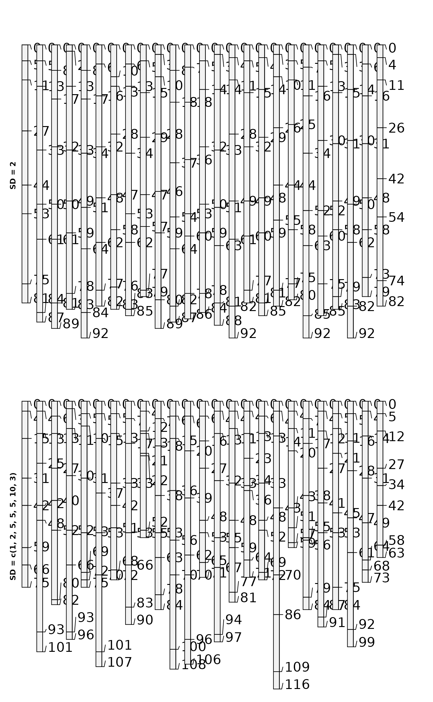
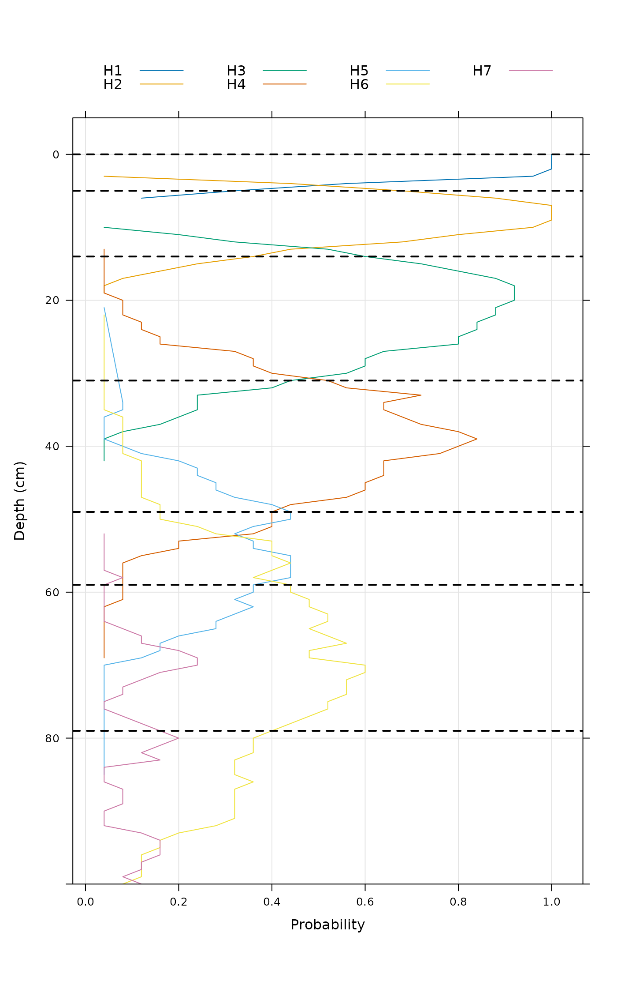

"Perturbs" the boundary between horizons or the thickness of horizons using a standard deviation specified as a horizon-level attribute. This is selected using either boundary.attr or thickness.attr to specify the column name.
The boundary standard deviation corresponds roughly to the concept of "horizon boundary distinctness." In contrast, the horizon thickness standard deviation corresponds roughly to the "variation in horizon thickness" so it may be determined from several similar profiles that have a particular layer "in common."
Usage
perturb(
p,
n = 100,
id = NULL,
thickness.attr = NULL,
boundary.attr = NULL,
min.thickness = 1,
max.depth = NULL,
new.idname = "pID"
)Arguments
- p
A SoilProfileCollection
- n
Number of new profiles to generate (default:
100) per profile inp- id
a vector of profile IDs with length equal to (
n). Overrides use ofseq_len(n)as default profile ID values.- thickness.attr
Horizon variance attribute containing numeric "standard deviations" reflecting horizon thickness
- boundary.attr
Horizon variance attribute containing numeric "standard deviations" reflecting boundary transition distinctness
- min.thickness
Minimum thickness of permuted horizons (default:
1)- max.depth
Depth below which horizon depths are not perturbed (default:
NULL)- new.idname
New column name to contain unique profile ID (default:
pID)
Details
Imagine a Normal curve with mean centered on the vertical (depth axis) at a representative value (RV) horizon bottom depth or thickness. By the Empirical Rule for Normal distribution, two "standard deviations" above or below that "central" mean value represent 95% of the "typical volume" of that horizon or boundary.
perturb() can leverage semi-quantitative (ordered factor) levels of boundary distinctness/topography for the upper and lower boundary of individual horizons. A handy function for this is hzDistinctnessCodeToOffset(). The boundary.attr is arguably easier to parameterize from a single profile description or "Form 232" where horizon boundary distinctness classes (based on vertical distance of transition) are conventionally recorded for each layer.
Alternately, perturb() can be parameterized using standard deviation in thickness of layers derived from a group. Say, the variance parameters are defined from a set of pedons correlated to a particular series or component, and the template "seed" profile is, for example, the Official Series Description or the Representative Component Pedon.
Examples
### THICKNESS
# load sample data and convert into SoilProfileCollection
data(sp3)
depths(sp3) <- id ~ top + bottom
# select a profile to use as the basis for simulation
s <- sp3[3,]
# reset horizon names
s$name <- paste('H', seq_along(s$name), sep = '')
# simulate 25 new profiles
horizons(s)$hz.sd <- 2 # constant standard deviation
sim.1 <- perturb(s, n = 25, thickness.attr = "hz.sd")
# simulate 25 new profiles using different SD for each horizon
horizons(s)$hz.sd <- c(1, 2, 5, 5, 5, 10, 3)
sim.2 <- perturb(s, n = 25, thickness.attr = "hz.sd")
# plot
par(mfrow = c(2, 1), mar = c(0, 0, 0, 0))
plot(sim.1)
mtext(
'SD = 2',
side = 2,
line = -1.5,
font = 2,
cex = 0.75
)
plot(sim.2)
mtext(
'SD = c(1, 2, 5, 5, 5, 10, 3)',
side = 2,
line = -1.5,
font = 2,
cex = 0.75
)

# aggregate horizonation of simulated data
# note: set class_prob_mode=2 as profiles were not defined to a constant depth
sim.2$name <- factor(sim.2$name)
a <- slab(sim.2, ~ name, cpm=2)
# convert to long format for plotting simplicity
library(data.table)
a.long <- data.table::melt(data.table::as.data.table(a),
id.vars = c('top', 'bottom'),
measure.vars = levels(sim.2$name))
# plot horizon probabilities derived from simulated data
# dashed lines are the original horizon boundaries
library(lattice)
xyplot(
top ~ value,
groups = variable,
data = a.long,
subset = value > 0,
ylim = c(100,-5),
type = c('l', 'g'),
asp = 1.5,
ylab = 'Depth (cm)',
xlab = 'Probability',
auto.key = list(
columns = 4,
lines = TRUE,
points = FALSE
),
panel = function(...) {
panel.xyplot(...)
panel.abline(h = s$top, lty = 2, lwd = 2)
}
)

### BOUNDARIES
# example with sp1 (using boundary distinctness)
data("sp1")
depths(sp1) <- id ~ top + bottom
# specify "standard deviation" for boundary thickness
# consider a normal curve centered at boundary RV depth
# lookup table: ~maximum thickness of boundary distinctness classes, divided by 3
bound.lut <- c('V'=0.5,'A'=2,'C'=5,'G'=15,'D'=45) / 3
## V A C G D
## 0.1666667 0.6666667 1.6666667 5.0000000 15.0000000
sp1$bound_sd <- bound.lut[sp1$bound_distinct]
# hold any NA boundary distinctness constant
sp1$bound_sd[is.na(sp1$bound_sd)] <- 0
quantile(sp1$bound_sd, na.rm = TRUE)
#> 0% 25% 50% 75% 100%
#> 0.0000000 0.0000000 0.6666667 0.6666667 1.6666667
p <- sp1[3]
# assume boundary sd is 1/12 midpoint of horizon depth
# (i.e. general relationship: SD increases (less well known) with depth)
sp1 <- transform(sp1, midpt = (bottom - top) / 2 + top, bound_sd = midpt / 12)
quantile(sp1$bound_sd)
#> 0% 25% 50% 75% 100%
#> 0.08333333 0.92708333 3.75000000 9.25000000 19.41666667
perturb(p, boundary.attr = "bound_sd", n = 10)
#> SoilProfileCollection with 10 profiles and 50 horizons
#> profile ID: id | horizon ID: hzID
#> Depth range: 64 - 70 cm
#>
#> ----- Horizons (6 / 50 rows | 10 / 20 columns) -----
#> id hzID top bottom group bound_distinct bound_topography name texture
#> P003-01 1 0 2 2 C W Oa/A SL
#> P003-01 2 2 15 2 G S AB SCL
#> P003-01 3 15 34 2 G S BA SCL
#> P003-01 4 34 54 2 C S Bt1 GRVSCL
#> P003-01 5 54 67 2 G S Bt2 GRVC
#> P003-02 6 0 2 2 C W Oa/A SL
#> prop
#> 14
#> 18
#> 22
#> 30
#> 50
#> 14
#> [... more horizons ...]
#>
#> ----- Sites (6 / 10 rows | 2 / 2 columns) -----
#> id .oldID
#> P003-01 P003
#> P003-02 P003
#> P003-03 P003
#> P003-04 P003
#> P003-05 P003
#> P003-06 P003
#> [... more sites ...]
#>
#> Spatial Data:
#> [EMPTY]
### Custom IDs
ids <- sprintf("%s-%03d", profile_id(p), 1:10)
perturb(p, boundary.attr = "bound_sd", id = ids)
#> SoilProfileCollection with 10 profiles and 50 horizons
#> profile ID: id | horizon ID: hzID
#> Depth range: 65 - 69 cm
#>
#> ----- Horizons (6 / 50 rows | 10 / 20 columns) -----
#> id hzID top bottom group bound_distinct bound_topography name texture
#> P003-001 1 0 2 2 C W Oa/A SL
#> P003-001 2 2 14 2 G S AB SCL
#> P003-001 3 14 36 2 G S BA SCL
#> P003-001 4 36 52 2 C S Bt1 GRVSCL
#> P003-001 5 52 68 2 G S Bt2 GRVC
#> P003-002 6 0 3 2 C W Oa/A SL
#> prop
#> 14
#> 18
#> 22
#> 30
#> 50
#> 14
#> [... more horizons ...]
#>
#> ----- Sites (6 / 10 rows | 2 / 2 columns) -----
#> id .oldID
#> P003-001 P003
#> P003-002 P003
#> P003-003 P003
#> P003-004 P003
#> P003-005 P003
#> P003-006 P003
#> [... more sites ...]
#>
#> Spatial Data:
#> [EMPTY]